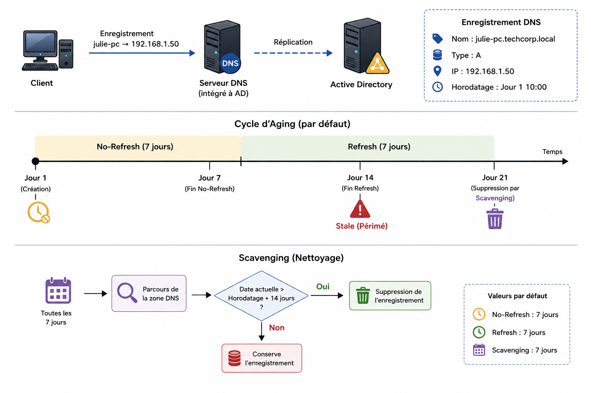

Dans un environnement Active Directory, le DNS n'est pas une simple base de correspondances nom ↔ IP figée. Il vit, se met à jour, et surtout — il devrait vieillir. Sans mécanisme de nettoyage, une zone DNS intégrée à Active Directory accumule au fil des mois des enregistrements fantômes : des postes réformés, des IP réattribuées, des machines qui n'existent plus mais dont le nom continue de répondre.

Deux mécanismes complémentaires règlent ce problème :
Aging (le vieillissement) : le mécanisme de compte à rebours qui détermine si un enregistrement DNS est toujours vivant ou s'il est devenu obsolète (stale).
Scavenging (le nettoyage) : le processus qui passe à intervalles réguliers pour supprimer définitivement les enregistrements déclarés obsolètes par l'Aging.
L'un détecte, l'autre supprime. Ils ne font jamais la même chose, et comprendre pourquoi ils sont séparés est la clé de tout cet article.
1. Comment fonctionne l'Aging
Quand une machine dynamique (un PC) enregistre son IP dans le DNS, Windows lui attribue une date de création : l'horodatage (timestamp).
L'Aging se décompose en deux périodes consécutives, chacune fixée par défaut à 7 jours :
[--- 7 jours : No-Refresh ---][--- 7 jours : Refresh ---] ---> Enregistrement périmé (Stale)
^ ^
Enregistrement créé/mis à jour Compte à rebours écouléa) Intervalle de non-rafraîchissement (No-Refresh) — 7 jours
Pendant ces 7 jours, si le PC tente de rafraîchir son enregistrement DNS sans changer d'adresse IP, le serveur DNS refuse de mettre à jour la date.
b) Intervalle de rafraîchissement (Refresh) — 7 jours
Pendant cette deuxième fenêtre, le serveur DNS accepte que le PC rafraîchisse sa date :
- Si le PC est allumé, il envoie un signal (« Je suis toujours là ») : l'horodatage repart à zéro, et le cycle recommence.
- Si le PC est éteint, jeté ou déconnecté, la période s'écoule sans aucune mise à jour. L'enregistrement devient officiellement périmé (Stale).
Le No-Refresh ne bloque pas les changements d'IP
Une confusion fréquente : penser que la période No-Refresh empêche un PC de changer d'adresse. C'est faux. La règle du No-Refresh s'applique uniquement si l'adresse IP reste identique :
- Si l'IP ne change pas : le serveur refuse de mettre à jour l'horodatage, pour économiser de la bande passante et éviter de surcharger la réplication Active Directory.
- Si l'IP change : (le PC passe du Wi-Fi à l'Ethernet, change de sous-réseau, obtient un nouveau bail DHCP), il s'agit d'une véritable modification d'enregistrement. Le serveur DNS l'accepte immédiatement et met à jour l'horodatage, même si le PC était encore dans sa période No-Refresh.
À retenir : No-Refresh signifie « ne rafraîchis pas la date si rien n'a changé », et non « interdiction de modifier l'adresse IP ».
Pourquoi le serveur refuse-t-il de mettre à jour la date ?
Quand le PC de Julie s'allume le matin, il envoie une requête : « Je suis julie-pc avec l'IP 192.168.1.50 ».
- Ce que voit le PC : le serveur DNS répond "C'est validé".
- Ce qui se passe réellement dans l'AD : le serveur ne modifie pas la date stockée en base. Il garde la date de la semaine précédente.
La raison est purement structurelle : dans un DNS intégré à Active Directory, chaque enregistrement DNS est aussi un objet Active Directory. Modifier sa date de mise à jour, c'est donc modifier un objet AD — ce qui déclenche une réplication vers tous les autres contrôleurs de domaine du réseau. Si 2 000 postes rafraîchissaient leur horodatage chaque matin à l'allumage, cela générerait une tempête de réplication totalement inutile, pour une information qui n'a strictly pas changé. Le No-Refresh existe donc uniquement pour absorber ce bruit.
2. Comment fonctionne le Scavenging
Une fois qu'un enregistrement devient périmé, il ne disparaît pas automatiquement. Il reste dans la base DNS tant que le Scavenging n'a pas tourné.
Le Scavenging est une tâche programmée sur le serveur DNS (par exemple, exécutée tous les 7 jours). À chaque déclenchement, il applique cette vérification à tous les enregistrements de la zone :
Si (Date actuelle) > (Horodatage + No-Refresh + Refresh)
→ Supprimer l'enregistrement3. Exemple concret pas à pas
Prenons le cas du PC de Julie (julie-pc), avec les réglages par défaut (No-Refresh = 7j, Refresh = 7j, Scavenging exécuté tous les 7j).
Cycle de vie normal :
| Jour | Événement | Ce qui se passe en arrière-plan |
|---|---|---|
| Jour 1 (Lundi) | Julie branche son PC. IP : 192.168.1.50. |
L'enregistrement est créé. Horodatage = Jour 1. |
| Jour 3 (Mercredi) | Julie redémarre son PC. | Le PC tente de rafraîchir le DNS. Refusé (période No-Refresh active). L'horodatage reste Jour 1. |
| Jour 8 (Lundi suivant) | Entrée dans la période de Refresh. | Le PC est allumé, il rafraîchit son bail DNS. Accepté. L'horodatage devient Jour 8. Le cycle repart à zéro. |
Scénario de départ (Julie part en congé avec son PC au Jour 8) :
| Jour | Événement | Ce qui se passe en arrière-plan |
|---|---|---|
| Jour 8 à 15 | Période No-Refresh (7 jours). | Le PC est éteint. Rien ne se passe. |
| Jour 15 à 22 | Période Refresh (7 jours). | Le PC est toujours éteint, aucun rafraîchissement n'a lieu. |
| Jour 22 | Fin des 14 jours cumulés. | L'enregistrement julie-pc est marqué obsolète (Stale). Il reste visible dans la console, mais considéré comme "fantôme". |
| Jour 28 | Exécution automatique du Scavenging. | Le serveur balaie la zone DNS, repère l'entrée julie-pc périmée depuis le Jour 22, et la supprime définitivement. |
4. À quoi sert de marquer un enregistrement « périmé » s'il continue de répondre ?
C'est le point le plus contre-intuitif du mécanisme : entre le Jour 22 et le Jour 28, l'enregistrement julie-pc est officiellement stale, mais le serveur DNS continue de le renvoyer normalement si quelqu'un le demande. Le statut "périmé" n'est pas un interrupteur qui désactive un enregistrement en temps réel — c'est uniquement un critère de filtrage pour le Scavenging.
Deux raisons structurelles expliquent ce choix :
a) La performance du serveur DNS.
Pour répondre en quelques millisecondes à des milliers de requêtes par seconde, le moteur DNS doit rester extrêmement rapide. S'il devait recalculer, à chaque requête, la formule (Timestamp + No-Refresh + Refresh < Date actuelle), le processeur du contrôleur de domaine s'effondrerait sous la charge. Le serveur se contente donc de lire l'enregistrement tel qu'il est en mémoire, sans vérification en temps réel.
b) Le traitement par lots (batch processing).
Supprimer un objet dans Active Directory consomme des ressources et génère du trafic de réplication. Le système évite donc de supprimer les entrées une par une en temps réel. Il attend l'exécution programmée du Scavenging, qui scanne alors la base globalement, repère en une seule passe tous les enregistrements périmés, et les supprime d'un coup.
L'analogie du frigo : c'est exactement la date de péremption sur une brique de lait. À minuit passé, le lait devient théoriquement périmé — mais la brique ne disparaît pas magiquement du frigo. Si tu l'ouvres sans regarder la date, tu peux encore t'en servir (le DNS continue de donner l'IP). Elle restera là jusqu'à ce que tu fasses le ménage hebdomadaire (le Scavenging) et jettes ce qui est périmé.
C'est précisément cette fenêtre entre "périmé" et "supprimé" — combinée à l'absence totale de Scavenging dans de nombreux environnements réels — qui ouvre une véritable surface d'attaque.
5. Pourquoi le trafic peut être envoyé vers une IP obsolète, même si le PC est bien allumé
On pourrait se dire : « Si un admin veut joindre un PC, c'est qu'il est allumé — donc il a forcément un enregistrement DNS à jour. Pourquoi le trafic irait-il vers une ancienne IP ? » Deux scénarios contredisent cette logique.
a) Le problème des enregistrements multiples (Multi-A Records)
Quand julie-pc revient de congés et se branche sur un autre réseau, DHCP lui attribue une nouvelle IP, par exemple 192.168.1.99 :
- Le PC enregistre sa nouvelle IP :
julie-pc → 192.168.1.99. - Sans Scavenging, l'ancien enregistrement
julie-pc → 192.168.1.50reste également présent. - Résultat : la zone DNS contient désormais deux IP différentes pour le même nom. Quand quelqu'un tape
ping julie-pc, le serveur applique un comportement de répartition (round-robin) et renvoie une fois sur deux l'ancienne IP — celle qui ne correspond plus à Julie.
b) Les scripts d'administration qui interrogent des PC éteints
Un administrateur n'ouvre pas toujours une session manuelle sur un poste en direct. Il lance souvent des scripts automatisés (déploiement d'antivirus, audit PowerShell) qui parcourent l'ensemble des ordinateurs inscrits dans l'annuaire :
julie-pcest éteinte, dans un tiroir, depuis des mois.- Le script interroge le DNS : « Donne-moi l'IP de
julie-pc». - Le DNS répond
192.168.1.50— l'adresse fantôme restée en mémoire, faute de Scavenging. - Entre-temps, le serveur DHCP a réattribué cette même IP à une toute autre machine — potentiellement celle d'un attaquant connecté au réseau.
- Le script d'administration tente de s'authentifier à distance sur
192.168.1.50avec des privilèges d'administrateur du domaine, livrant ses identifiants à qui répond à cette adresse.
C'est ce dernier point qui transforme un simple problème d'hygiène DNS en risque de sécurité critique.
6. Risques cybersécurité liés à l'absence de Scavenging
Si le Scavenging n'est pas activé, la base DNS se remplit progressivement d'enregistrements fantômes. Cela ouvre plusieurs angles d'attaque concrets.
a) Usurpation d'identité et attaque Man-in-the-Middle (MitM)
julie-pcavait l'IP192.168.1.50. Le PC est réformé ou déconnecté.- L'enregistrement
julie-pc.techcorp.local → 192.168.1.50reste indéfiniment en base. - DHCP réattribue cette IP à une nouvelle machine — ou un attaquant branche un équipement malveillant et s'approprie cette adresse.
- Un administrateur (ou un script) tente d'accéder à
\\julie-pc\c$ou d'exécuter une commande PowerShell à distance surjulie-pc. - Le trafic part vers
192.168.1.50. L'attaquant reçoit la connexion, intercepte le hachage d'authentification (NTLMv2) et peut tenter de le casser hors ligne ou de le rejouer (relais NTLM).
b) Repli vers des protocoles vulnérables (LLMNR / NBT-NS)
Si une machine tente de joindre un hôte via son nom DNS mais que l'IP enregistrée ne répond plus (la machine physique est éteinte depuis longtemps), Windows peut basculer vers des protocoles de résolution de noms locaux plus anciens : LLMNR ou NBT-NS. Un attaquant à l'écoute du réseau (avec un outil comme Responder) peut répondre à la place de la machine manquante et capturer les identifiants de l'utilisateur.
c) Reconnaissance et cartographie pour l'attaquant
Lors de la phase de reconnaissance, un attaquant disposant d'un accès basique au domaine peut extraire l'intégralité de la zone DNS (via des outils comme BloodHound, AdFind ou PowerView). Une base DNS non nettoyée lui fournit une cartographie complète de l'historique du réseau — y compris d'anciens sous-réseaux ou serveurs oubliés, potentiellement porteurs de vulnérabilités jamais corrigées.
d) Aveuglement du SOC lors d'un incident
En cas d'alerte remontée par un pare-feu ou un SIEM sur une IP donnée, les analystes effectuent généralement une résolution DNS inversée pour identifier la machine concernée. Si le DNS renvoie le nom d'un poste déconnecté depuis six mois, l'investigation est faussée — et l'attaque réellement en cours passes inaperçue.
7. Activer le Scavenging : les deux conditions obligatoires
Le Scavenging ne s'active pas à un seul endroit — il exige une configuration à deux niveaux distincts, et l'omission de l'un des deux suffit à le rendre totalement inopérant :
- Au niveau de la zone DNS : clic droit sur la zone (ex.
techcorp.local) → Properties → onglet Aging → cocher Scavenge stale resource records. - Au niveau du serveur DNS : clic droit sur le contrôleur de domaine → Set Aging/Scavenging for All Zones → activer et définir la fréquence du balayage.
Conclusion
L'Aging et le Scavenging ne sont pas une simple fonctionnalité de "ménage" cosmétique dans Active Directory. C'est un contrôle de sécurité à part entière, au même titre qu'une politique de mots de passe ou une gestion rigoureuse des groupes (voir l'article sur AGDLP dans Active Directory).
Un DNS qui n'oublie jamais rien devient, avec le temps, une carte au trésor pour un attaquant : des IP fantômes prêtes à être détournées, une cartographie complète de l'historique réseau, et un SOC qui enquête sur les mauvaises machines. Configurer l'Aging et le Scavenging correctement, c'est s'assurer que la mémoire du réseau reste fidèle à sa réalité présente — ni plus, ni moins.